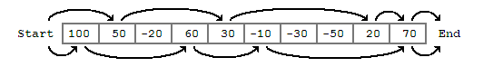
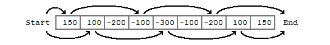

| Source file: | ripoff.{c, cpp, java} |
| Input file: | ripoff.in |
Business has been slow at Gleamin’ Lemon Used Auto Sales. In an effort to bring in new customers, management has created the Rebate Incentive Program Of Fabulous Fun (or RIPOFF). This is a simple game which allows customers to try and win a rebate on an automobile purchase. The RIPOFF game is a board game where each square is labeled with a rebate amount. The customer advances through the board by spinning a spinner. Each square he lands on adds to his total rebate amount. When he reaches the end of the board he is rewarded with the total rebate amount.
Of course, given the company involved, it should come as no surprise that there are a couple of catches written in the fine print. The first is that there is a limit to the number of turns the customer has to finish the game; if he doesn’t reach the end within the allotted number of turns then he loses his rebate. The second is that some of the squares actually have a negative amount which subtract from the rebate instead of adding to it. A particularly unlucky customer might even come out of the game with a negative rebate.
Even with these catches, the management of Gleamin’ Lemon is concerned that someone might win a particularly large rebate—something they would like to avoid at all costs. Your job is to take a particular configuration for the RIPOFF game and decide the maximum rebate a customer could possibly obtain.
Consider, for example, the game board below. Assume we have 5 turns to finish the game, and each turn we can move between 1 and 4 spaces depending on what we spin. Notice that we must start just before the board begins, so spinning a 1 causes us to land on the first square. Also notice we must end by landing past the end of the last square. It does not have to be exact; any number that gets us off of the board will work.
|  |
| Figure 1 |
The illustration shows two different possible ways the game might go. Following the arrows on the top, if we spin a 2, 3, 4, 1, and 1 respectively, we will win a total rebate of 50 + 30 + 20 + 70 = $170. However, the best possible rebate we could win would be $220. We would win this amount if we spun a 1, 3, 2, 4, and 1 respectively, as shown by the lower path. Notice that we did not land on every square with a positive number; if we had we wouldn’t have been able to make it to the end of the board before the 5 turns was up.
|  |
| Figure 2 |
The illustration in Figure 2 shows a game where we have 4 turns to finish the game, and can move up to 3 spaces each turn. Again, two different paths are shown, the one on top earning a rebate of -$150, and the one on bottom earning a rebate of -$100. In fact, -$100 is the highest possible rebate we could earn for this game (a fact that would no doubt please the management of Gleamin’ Lemon). Of course, there also might be a sequence of moves in which we do not reach the end before the turn limit—e.g. spinning a 1 every time. Although not finishing would actually be preferable to finishing with a negative rebate, in this problem we are only going to consider sequences of moves which allow us to reach the end before the turn limit.
Input: The input consists of one to twenty data sets, followed by a line containing only 0.
The first line of a data set contains three space separated integers N S T, where
The data set ends with one or more lines containing a total of N integers, the numbers on the board. Each number has magnitude less than 10000.
Output: The output for each data set is one line containing only the maximum possible rebate that can be earned by completing the game.
To complete the game you must advance a total of N + 1 spaces in at most T turns, each turn advancing from 1 to S spaces inclusive. It will always be possible to complete a game. However, there may be a very large number of different turn sequences that will finish, so you will need to be careful in choosing your algorithm.
The sample input data corresponds to the games in the Figures.
| Example input: | Example output: |
| 10 4 5 100 50 -20 60 30 -10 -30 -50 20 70 9 3 4 150 100 -200 -100 -300 -100 -200 100 150 0 |
220 -100 |